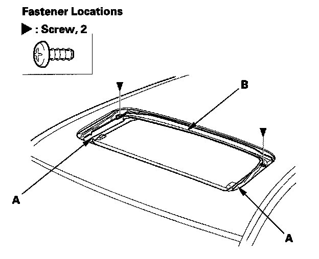
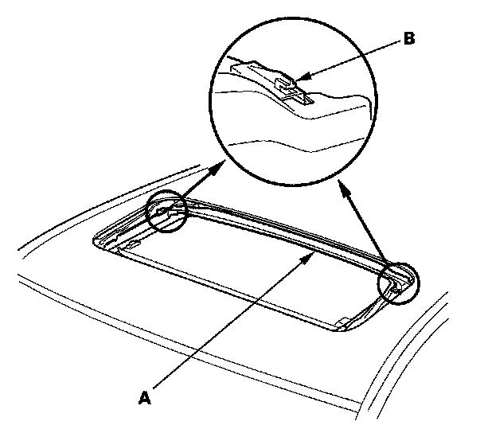
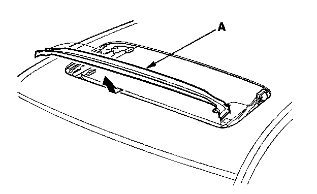

Drain Channel
Drain Channel Replacement1. Remove the glass.

2. Move both glass brackets (A) to the position where the moonroof normally pivots down, and remove the screws securing the drain channel (B).

3. Release the drain channel (A) from both hooks (B) of the drain channel slider by pulling the drain channel forward.

4. Remove the drain channel (A).
5. Install the channel in the reverse order of removal, and note these items:
- Push the drain channel onto the hooks until a faint click is heard.
- Check the glass height adjustment
6. Reset the moonroof control unit
7. Check for water leaks. Let the water run freely from a hose without a nozzle. Do not use a high-pressure spray.